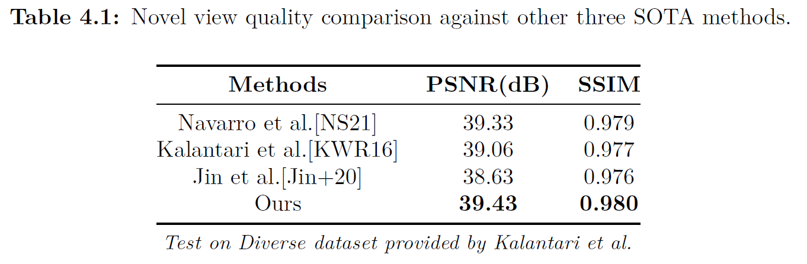

Xuan Luo
I am a graduate student at Technical University of Denmark, where I work on computer vision, data compression and machine learning in IoT, etc. I have recently completed my master degree in Telecommunication(GPA:10.14/12 in Denmark grading system, approximately 3.85/4.0), DTU Fotonik, where I was supervised by Prof. Søren Forchhammer.
Recent Projects
This project is my master thesis(Grade: 12/12), which proposed a learning-based method to synthesize novel views of a light field (LF) image. Specifically, we utilize four corner LF views from a 4D LF and synthesize any in-between views via sequential convolutional neural networks(CNNs), consisting of a mask selection network and an inpainting network. Experimental results show that the proposed method outperforms other three state-of-the-art approaches.

In this project, we proposed a method termed AptBLE, that switches the PHY mode in Bluetooth5 adaptively by considering the Received Signal Strength Indicator (RSSI) level. Specifically, we optimise the RSSI threshold for different PHY modes using the K-means clustering algorithm. Moreover, based on AptBLE, we further enable the Data Length Extension (DLE) feature and term the improved method as AptBLEM. We implement AptBLE (M) on the boards and test in indoor environment. The experimental results show that AptBLE is more flexible, robust and outperforms the original fixed PHY mode in terms of throughput and transmission range. Furthermore, AptBLEM can triple the throughput than AptBLE, with a maximum throughput value in 1035Kbps and 42m range in indoor environment.
Research
I'm interested in devleoping different tasks for computer vision (e.g. view synthesis, super-resolution, object detection and style transfer) using deep learning models such as deep Convolutional Neural Networks(CNNs) and Vision Transformer(ViT).
Conference Papers:
- AptBLE: Adaptive PHY Mode based on K-means Algorithm in Bluetooth5
Xuan Luo, Mingyuan Zang, Ying Yan, Lars Dittmann
WTS 2021 | paper